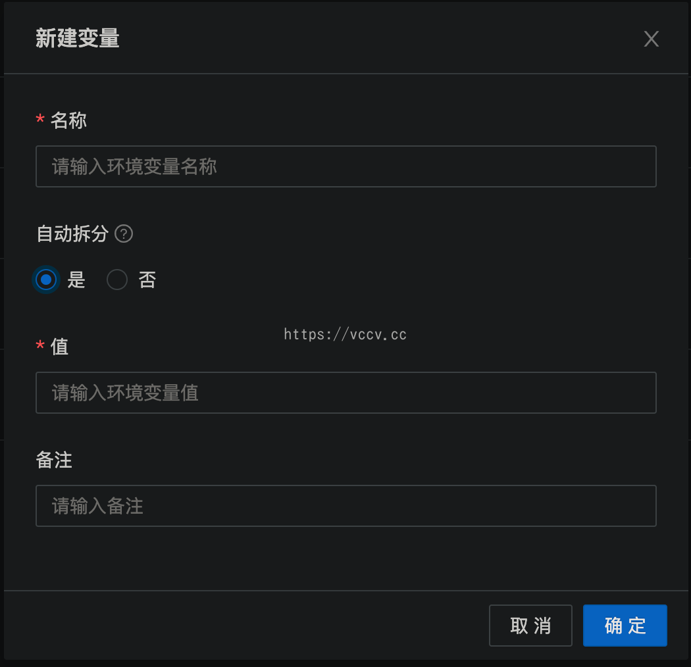

服务器利用之青龙面板
前言
由于我的本意是压榨闲置服务器的价值，所以本篇文章都是以云服务器为本体进行部署，其他设备比如N1或者玩客云，请自行查找资料部署。
服务器选择
地区选择：
最好选择国内服务器，这样对京东挂机来说比较安全，但是有网络问题（连接GitHub不稳定，比较麻烦），国外服务器则没有这方面的问题。
系统选择Centos 7 x64。
Centos 7相对于青龙面板来说是较好的，亲测Ubuntu系统有些环境依赖安装不上，比较麻烦。
安装
方法一
使用 docker-compose 进行安装。
macOS安装：
使用Homebrew安装，点击查看。
- docker-compose 安装
1 | sudo curl -L https://github.com/docker/compose/releases/download/1.16.1/docker-compose-`uname -s`-`uname -m` -o /usr/local/bin/docker-compose |
- 启动容器
1 | mkdir qinglong |
方法二
直接使用docker安装
安装Docker：
2022.12.05 更新：
推荐macOS用户使用Colima安装docker运行环境，点击查看。
国内：
1
curl -fsSL https://get.docker.com | bash -s docker --mirror Aliyun
国外：
1
curl -fsSL https://get.docker.com | bash -s docker
启动Docker并设置自启：
1
2sudo systemctl start docker
sudo systemctl enable docker拉取镜像
1
docker pull whyour/qinglong:latest
部署面板
1
2
3
4
5
6
7
8
9docker run -dit \
-v $PWD/ql/config:/ql/config \
-v $PWD/ql/log:/ql/log \
-v $PWD/ql/db:/ql/db \
-p 5600:5600 \
--name qinglong \
--hostname qinglong \
--restart always \
whyour/qinglong:latest第五行端口号（5600）建议修改一下，安全一些。
初始化
访问 IP:端口号 ，例如本地地址127.0.0.1:5600进入青龙面板安装界面。
按照流程走一遍即可。
通知设置那里可以配置多种通知方式，选择一个你最常用的。如果没有，也可以跳过或者百度一下Sever酱（简单，不推荐）、企业微信机器人（有使用企业微信的推荐）。
添加任务
进入主菜单，右上角选择新建任务：
名称随意，可不填；命令如下，一行一个，共九个；定时规则可自己填写，我这里默认 0 0 0 * * * ，表示每一天的0时0分0秒。
1 | ql repo https://github.com/KingRan/KR.git "jd_|jx_|jdCookie" "activity|backUp" "^jd[^_]|USER|utils|function|sign|sendNotify|ql|JDJR" |
全部填写好后，我们主动运行一遍，全选后点击 批量运行 。等一会儿会发现多出了几百个任务。
配置京东cookie
这里我使用的是 Google浏览器 ，访问京东 移动网页端签到地址 ，打开开发者模式（快捷键：F12），打开网络（Network）标签，按照网页提示登录你的京东账号，复制账号 Cookie，如下图所示：
一些小提示：
多账号只需要在值里面换行输入下一个Cookie，不能再创建一个变量。- 多账号配置在最新版本中需要先 全部换行输入 再勾选 自动拆分 即可。
 - Cookie值只需要其中的 pt_key 与 pt_pin 就可以了，不懂的话全部复制粘贴上去也没问题。
- 不要频繁的去执行，避免黑号。
- 京东账号建议绑定微信，活动抽奖抽到微信红包会自动提现到微信钱包。
修改配置文件（可选）
点击 配置文件 ，可以修改其中的通知推送服务。这里的通知推送是每日任务的推送，开头设置的推送是青龙面板的登录推送等。这里建议设置一下，但是需注意，消息通常特别多。
安装依赖
1 | # 进入容器 |
漫长的等待，完成即可。
如果你的青龙容器不叫 qinglong ，请自行替换。
运行
此时终于大功告成了，我们将页数选择为 1000条/页 后再全选任务批量运行即可。
以后任务会自动定时运行，就不用再管它了。
感谢
更新
更新一个傻瓜式一键脚本，适合小白或者不想折腾的用户：
1 | wget -q https://raw.githubusercontents.com/shufflewzc/VIP/main/Scripts/sh/ql.sh -O ql.sh && bash ql.sh |
需要预先安装wget，centos用户直接 yum install wget 即可，其他系统自行百度。
更新1
务必先下载好 京东、京喜、京东极速版 三个app并开启以下活动（有些需要选择种植或者生产的物品自行选择即可，千万不要空着，否则相当于活动未开），以防脚本无法运行未开启的活动，导致收益降低。
京东必开活动：东东农场、东东萌宠、宠汪汪、种豆得豆；
京喜必开活动：京喜财富岛、京喜牧场、京喜工厂；
京东极速版必开活动：汪汪乐园、注意需要绑定微信号（部分脚本会自动提现至微信）。
更新2
2022/06/02 更新最新版本多账号配置方式。
更新3
2022/06/12 更新获取京东cookie的网址。
作者：Yuesir
本文链接：https://vccv.cc/article/qinglong-jd.html
版权声明：本博客所有文章除特别声明外,均采用 CC BY-NC-ND 4.0 许可协议，转载请注明出处！